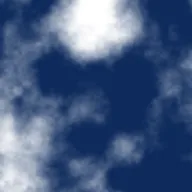

Bulutlar

Katmanın opak kısımlarını yumuşak bir bulut deseniyle kaplar; gürültü kaynağı olarak da kullanışlıdır.
Ayarlar
| Ayar | Tür | Aralık | Varsayılan |
|---|---|---|---|
| Paralaks | Nokta (X, Y) | -5000 px – 5000 px | 0 px, 0 px |
| Ofset | Nokta (X, Y) | -5000 px – 5000 px | 0 px, 0 px |
| Ölçek | Sayı | 0.01 – 50 | 1 |
| Uzat | Nokta (X, Y) | 0.01 – 10 | 1, 1 |
| Yoğunluk | Sayı | 0.25 – 0.75 | 0.5 |
| Tohum | Sayı | 0 – 5 | 0 |
| Renk 1 | Renk | – | #000000 |
| Renk 2 | Renk | – | #FFFFFF |
| Oktav | Sayı | 1 – 9 | 6 |